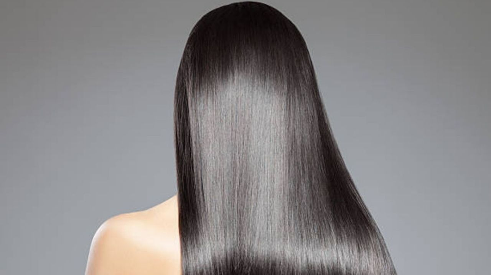

Sobre nosotros
Siempre destacamos por utilizar técnicas mínimamente invasivas, que crean resultados notables y de apariencia natural. Nuestros practicantes tienen mucha experiencia y están altamente capacitados. Nos apasiona ayudarlo a tener una apariencia más brillante y fresca en los años venideros.
tips
Una vez a la semana aplicá una mascarilla por 20'
También podés ponerla en seco por la noche y lavar el cabello al día siguiente.

Por lo menos una vez a la semana hidratá tus puntas con un aceite reparador antes de lavar tu pelo y dejala actuar 20'
Después lavá como de costumbre.
SIEMPRE cepilla el pelo de abajo hacia arriba, empezando por las puntas y andá subiendo de a poco sin tironear.
Hacerlo desde la raíz puede arrastrar los nudos y enredarlo aún más.
Enjuaga el cabello con agua fría..
Cierra los poros y estimula el crecimiento.
Si el cabello está muy maltratado y las puntas muy marchitas es necesario cortar un poco las puntas para que el daño no se siga extendiendo hacia arriba y se abran todas las hebras.
Así tu pelo se regenera y recupera vitalidad.
Los aceites de argan, almendra y coco son ideales para hidratar las puntas florecidas